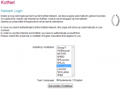
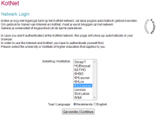

|  |
Automatische login voor o.a. Kotnet en Toledo  Installeer!
Installeer!Bijgewerkt:27 september 2012 Werkt met:Firefox 3.0 - 17.* Problemen? siemon [dot] kauffmann [at] student [dot] kuleuven [dot] be |
|  |
Automatische login voor o.a. Kotnet en Toledo
Installeer! Bijgewerkt:27 september 2012 Werkt met:Firefox 3.0 - 17.* Problemen? siemon [dot] kauffmann [at] student [dot] kuleuven [dot] be |